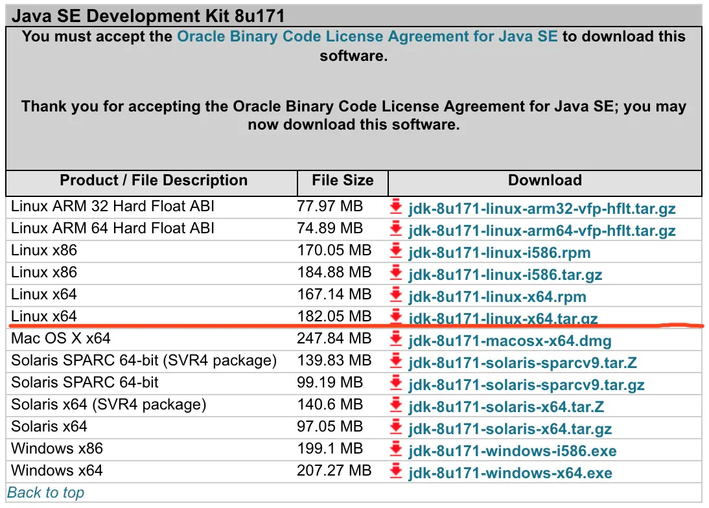

Linux配置Java环境变量
1. 下载JDK
JDK最新下载地址:
https://www.oracle.com/technetwork/java/javase/downloads/jdk8-downloads-2133151.html

2. 安装JDK
-
将 jdk-8u171-linux-x64.tar.gz 文件上传至linux服务器
-
解压缩tar.gz文件
tar -xzvf jdk-8u171-linux-x64.tar.gz -
环境变量的设置
在最后加入以下几行：vi /etc/profileJAVA_HOME=/usr/lib/jvm/java-1.8.0-openjdk-1.8.0.171-8.b10.el7_5.x86_64 （JDK安装目录） JRE_HOME=$JAVA_HOME/jre CLASS_PATH=.:$JAVA_HOME/lib/dt.jar:$JAVA_HOME/lib/tools.jar:$JRE_HOME/lib PATH=$PATH:$JAVA_HOME/bin:$JRE_HOME/bin export JAVA_HOME JRE_HOME CLASS_PATH PATH -
使环境变量立即生效命令
source /etc/profile
3. 测试JDK是否安装成功
- 查看安装版本
java -version openjdk version "1.8.0_171" OpenJDK Runtime Environment (build 1.8.0_171-b10) OpenJDK 64-Bit Server VM (build 25.171-b10, mixed mode) - 查看安装目录
java -verbose